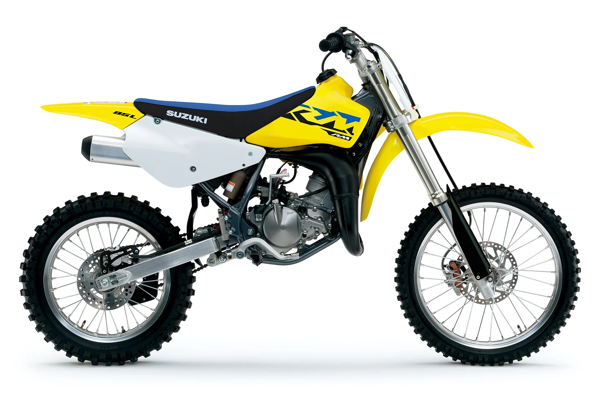

The RM85 continues to carry on the powerful tradition of racing excellence in the Suzuki motocross family. The reliable two-stroke engine produces smooth power at any rpm with an emphasis on low- to mid-range performance. Just like its larger RM-Z cousins, the RM85 delivers class-leading handling for both experienced racers and rookie riders alike. With its smooth power delivery and lightweight handling, the RM85 is the perfect motocross bike for anyone learning to race and striving to win!
>